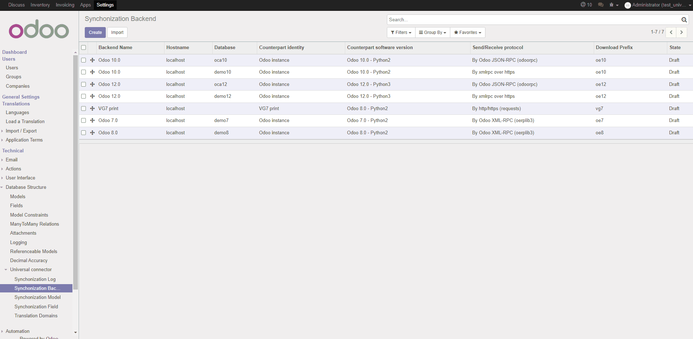

Universal Connector complete suite

Suite completa del Connettore universale






This module is Universal Connector suite. Itself does nothing, it is a bunch of all Universal Connector modules. For furthemore info read documentation of specific modules.
This suit can be used for:

Questo modulo è la suite Universal Connector. Di per sé non fa nulla, è un insieme di tutti i moduli Universal Connector. Per ulteriori informazioni, leggere la documentazione dei moduli specifici.
Questa suite può essere utilizzata per:


Settings » Activate the developer mode
Settings » Technical » Synchronization Backend
If Odoo can connect with remote counterparty, backend state is set to "Ready".
Some parameters depend on chosen protocol and identity. Below a short list of most used protocols.
xmlrpc over http/https
Read info from required universal_connector_base plugin.
http/https
Read info from required universal_connector_by_http plugin.
jsonrpc
Read info from required universal_connector_by_json plugin.
xmlrpc
Read info from required universal_connector_by_xmlrpc plugin.
csv
Read info from required universal_connector_by_jcsv plugin.

Configurazione » Attivare la modalità sviluppatore
Configurazione » Funzioni tecniche » Dorsale di sincronizzazione
Se Odoo riesce a connettersi con controparte, lo stato della dorsale diventa "Pronto".


If you want comunicate with Odoo form remote you can use 2 functions:
ir.model.synchro.trigger_one_record(ext_model, prefix, ext_id)odoo_model.synchro(vals)All the functions return the ID of record found or created. Negative values are error codes.
The function synchro accepts a data dictionary with field values, like RPC create and RPC write functions.
Every field name may be:
id (integer): the Odoo ID of record, supplied if write specific existent recordPFX_id (integer): the external partner ID of record (PFX is the backend prefix)"PFX:FIELD" where PFX is the backend prefix and FIELDSynchronizer behavior:
PFX_id field is supplied, record with PFX_id is searchedPFX_id
This function may be used if counterparty make available an interface to read record. This is automatic (with JSON-RPC and XML-RPC) for Odoo remote instances. Other software must publish the interchange interface like Swagger Swagger is avaialable on Odoo too, example Swagger for Odoo and Odoo REST framework For furthermore info read Generate swagger yaml from route methods

Per comunicare con Odoo da remoto è possibile usare 2 funzioni:
ir.model.synchro.trigger_one_record(ext_model, prefix, ext_id)odoo_model.synchro(vals)Tutte le funzioni restituiscono l'ID del record trovato o creato. I valori negativi sono codici di errore.
La funzione synchro accetta un dizionario dati con valori di campo, come le funzioni RPC create e RPC write.
Ogni nome di campo può essere:
id (intero): l'ID Odoo del record, fornito se si scrive uno specifico record esistentePFX_id (intero): l'ID partner esterno del record (PFX è il prefisso della dorsale)"PFX:FIELD" dove PFX è il prefisso dorsale e FIELDComportamento del sincronizzatore:
PFX_id, viene ricercato il record con PFX_idPFX_id
Questa funzione può essere utilizzata se la controparte rende disponibile un'interfaccia per leggere i record. Questo è automatico (con JSON-RPC e XML-RPC) per le istanze remote di Odoo. Altri software devono pubblicare l'interfaccia di interscambio come Swagger Swagger è disponibile anche su Odoo, ad esempio Swagger per Odoo e Odoo REST framework Per ulteriori informazioni leggere Genera swagger yaml da metodi di route
Authors | Autori:
Contributors | Partecipanti:
This module is maintained by the SHS_AV s.r.l..
This module is part of connector project.
Published information on | Informazioni pubblicate: 2025-01-04